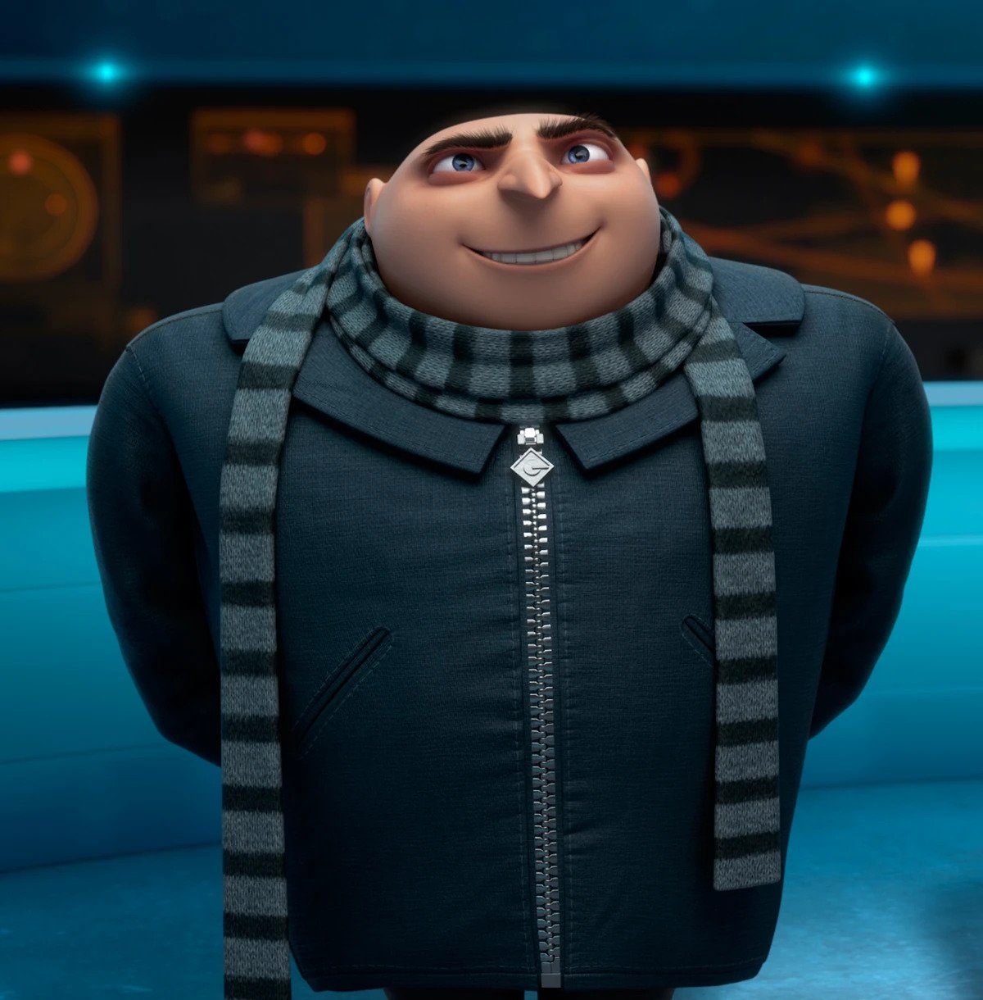
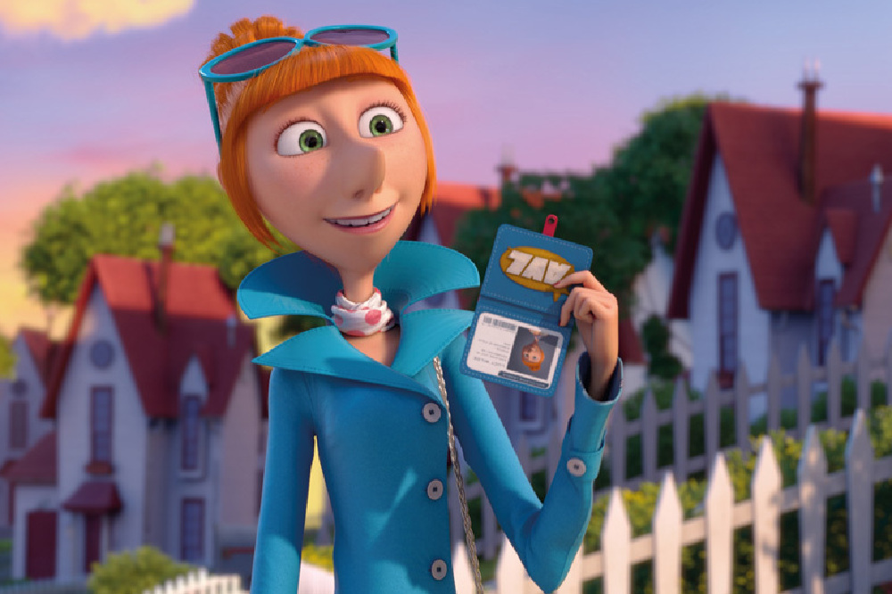
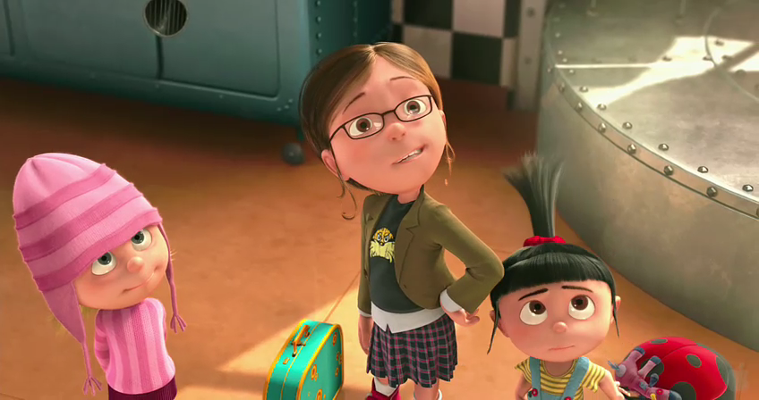
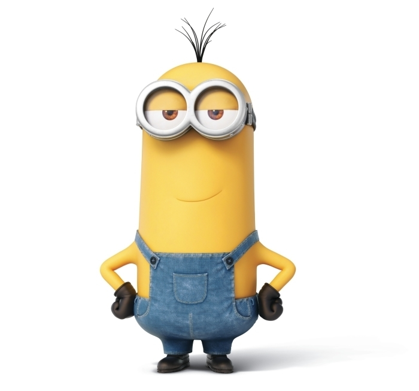
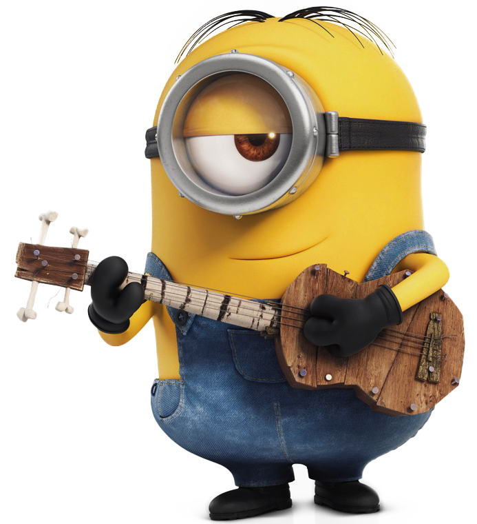
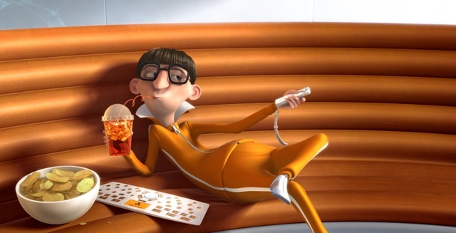
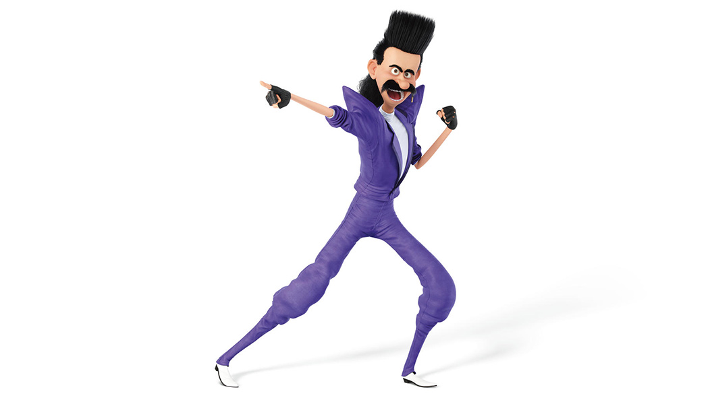
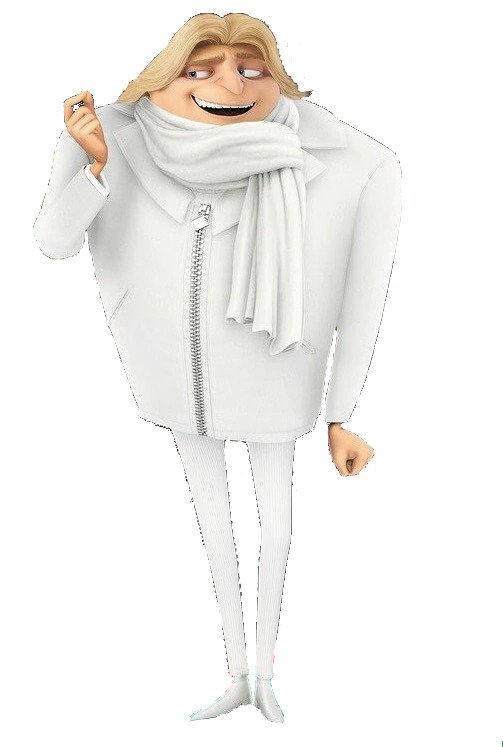
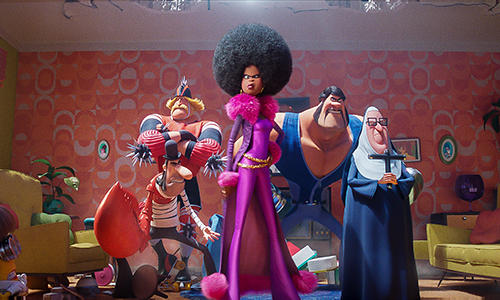

Gru
Gru is a fictional character in the "Despicable Me" animated film series, created by Illumination Entertainment. Initially portrayed as a supervillain, Gru later becomes a reformed character and adopts three orphaned girls, evolving into a loving father figure throughout the films.

Lucy
Lucy Wilde is a character in the "Despicable Me" film series who starts as an Anti-Villain League (AVL) agent assigned to work with Gru. Over time, she becomes Gru's love interest and eventually his wife, playing a key role in the family's adventures.

Agnes, Edith, and Margo
Agnes, Edith, and Margo are the three adopted daughters of Gru in the "Despicable Me" film series. Agnes is the youngest and the most adorable, Edith is the adventurous and tomboyish middle child, and Margo is the responsible and eldest sister. Together, they bring warmth and joy to Gru's life as he navigates the challenges of fatherhood while also participating in various humorous and heartwarming adventures.

Bob the Minion
Bob is one of the Minions, small, yellow, and mischievous characters in the "Despicable Me" franchise. He stands out with his different-shaped eyes and childlike innocence. Bob is known for his love of teddy bears and his endearing personality, making him a fan-favorite among the Minion characters.

Kevin the Minion
Kevin is another prominent Minion character in the "Despicable Me" series. He is recognizable by his tall stature and two eyes. Kevin often takes on leadership roles among the Minions and is known for his adventurous and brave nature. In the films, he plays a central role in various missions and comedic situations, contributing to the Minions' entertaining antics.

Stuart the Minion
Stuart is a notable Minion character in the "Despicable Me" franchise, recognized by his one eye and playful demeanor. Stuart is often depicted as the more musically inclined and carefree Minion. Like his fellow Minions, he adds humor and charm to the films, engaging in various comical antics alongside Gru and his other companions.

Vector
Vector is the main antagonist in the first "Despicable Me" film. He is a tech-savvy and eccentric character with a distinctive orange jumpsuit. Vector becomes Gru's rival as he attempts to steal the Great Pyramid of Giza, and his quirky personality adds a layer of humor to the storyline. Despite being an antagonist, Vector's over-the-top style and technological gadgets make him a memorable character in the series.

Balthazar Bratt
Balthazar Bratt is a character in the "Despicable Me" film series, introduced in "Despicable Me 3." He is a former child star turned supervillain, known for his '80s-inspired style and obsession with the character he played in his youth. Balthazar's humorous and nostalgic antics, including his use of retro gadgets and dance moves, make him a unique and entertaining adversary for Gru and the Minions in the third installment of the franchise.

Dru Gru
Dru Gru is a character introduced in "Despicable Me 3." He is Gru's long-lost twin brother, and their striking physical resemblance contrasts with their different personalities. Dru is portrayed as charming, flamboyant, and enthusiastic, standing in contrast to Gru's more reserved and gruff demeanor. The dynamic between the two brothers adds humor and depth to the storyline as they navigate their family ties and embrace their shared legacy of villainy.

The Vicious 6
The Vicious 6 is a group of supervillains featured in the "Minions: The Rise of Gru" film. Comprising six formidable members, this villainous group serves as a central element in the movie's plot. Led by a character named Wild Knuckles, the Vicious 6 pose a significant challenge to a young Gru as he embarks on his journey to become a supervillain.